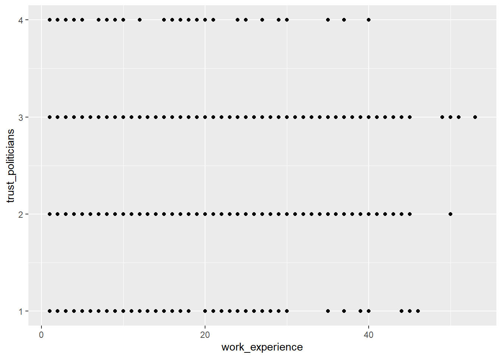
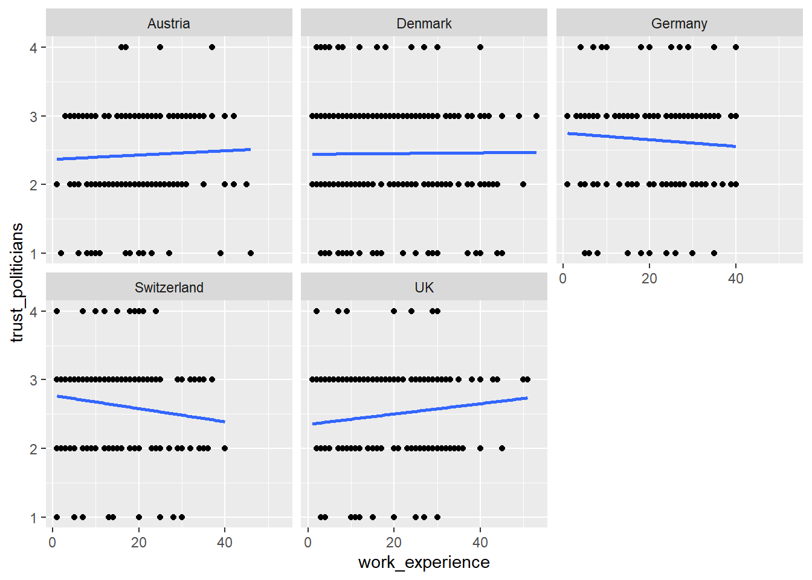
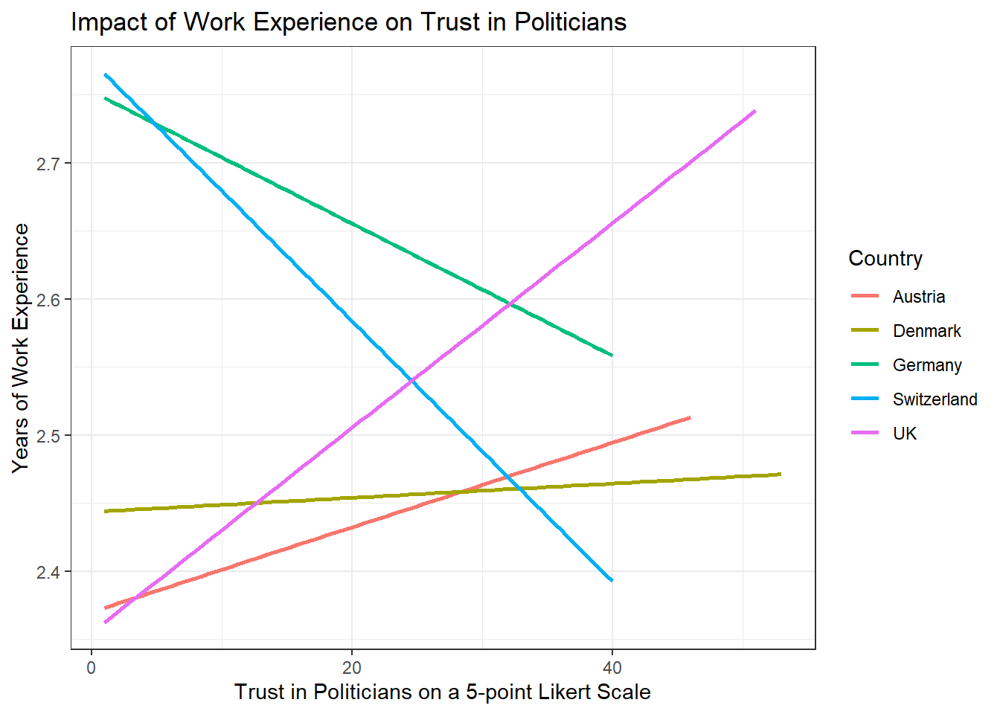
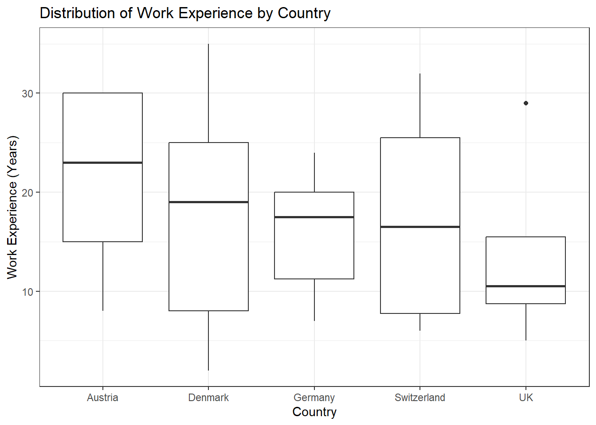
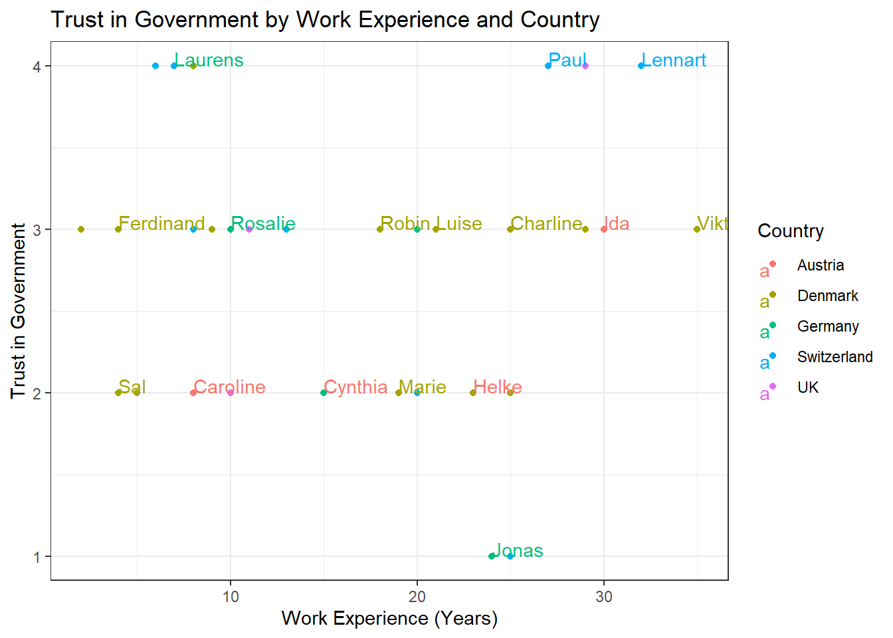

Solutions
This is where you’ll find solutions for all of the tutorials.
Solutions for Exercise 1
Task 1
Below you will see multiple choice questions. Please try to identify the correct answers. 1, 2, 3 and 4 correct answers are possible for each question.
1. What panels are part of RStudio?
Solution:
- source (x)
- console (x)
- packages, files & plots (x)
2. How do you activate R packages after you have installed them?
Solution:
- library() (x)
3. How do you create a vector in R with elements 1, 2, 3?
Solution:
- c(1,2,3) (x)
4. Imagine you have a vector called ‘vector’ with 10 numeric elements. How do you retrieve the 8th element?
Solution:
- vector[8] (x)
5. Imagine you have a vector called ‘hair’ with 5 elements: brown, black, red, blond, other. How do you retrieve the color ‘blond’?
Solution:
- hair[4] (x)
Task 2
Create a numeric vector with 8 values and assign the name age to the vector. First, display all elements of the vector. Then print only the 5th element. After that, display all elements except the 5th. Finally, display the elements at the positions 6 to 8.
Solution:
## [1] 65 52 73 71 80 62 68 87## [1] 80## [1] 65 52 73 71 62 68 87## [1] 62 68 87Task 3
Create a non-numeric, i.e. character, vector with 4 elements and assign the name eye_color to the vector. First, print all elements of this vector to the console. Then have only the value in the 2nd element displayed, then all values except the 2nd element. At the end, display the elements at the positions 2 to 4.
Solution:
## [1] "blue" "green" "brown" "grey"## [1] "green"## [1] "blue" "brown" "grey"## [1] "green" "brown" "grey"## [1] "green"## [1] "blue" "brown" "grey"## [1] "green" "brown" "grey"Solutions for Exercise 2
Task 1
Download the “WoJ_names.csv” from LRZ Sync & Share (click here) and put it into the folder that you want to use as working directory.
Set your working directory and load the data into R by saving it into a source object called data. Note: This time, it’s a csv that is separated by semicolons, not by commas.
Solution:
Task 2
Now, print only the column to the console that shows the trust in
government. Use the $ operator first. Then try to achieve the same
result using the subsetting operators, i.e. [].
Solution:
## <labelled<double>[40]>: Trust in government (likert)
## [1] 3 4 4 4 2 4 1 3 1 3 2 3 2 2 2 2 3 3 4 3 3 2 3 4 3 3 3 2 3 3 3 3 4 2 3 2 2 2
## [39] 2 3
##
## Labels:
## value label
## 1 none at all
## 2 a little
## 3 partly
## 4 a lot
## 5 very much## # A tibble: 40 × 1
## trust_government
## <dbl+lbl>
## 1 3 [partly]
## 2 4 [a lot]
## 3 4 [a lot]
## 4 4 [a lot]
## 5 2 [a little]
## 6 4 [a lot]
## 7 1 [none at all]
## 8 3 [partly]
## 9 1 [none at all]
## 10 3 [partly]
## # ℹ 30 more rowsTask 3
Print only the first 6 trust in government numbers to the console. Use
the $ operator first. Then try to achieve the same result using the
subsetting operators, i.e. [].
Solution:
## <labelled<double>[6]>: Trust in government (likert)
## [1] 3 4 4 4 2 4
##
## Labels:
## value label
## 1 none at all
## 2 a little
## 3 partly
## 4 a lot
## 5 very much## # A tibble: 6 × 1
## trust_government
## <dbl+lbl>
## 1 3 [partly]
## 2 4 [a lot]
## 3 4 [a lot]
## 4 4 [a lot]
## 5 2 [a little]
## 6 4 [a lot]Solutions for Exercise 3
Task 1
Below you will see multiple choice questions. Please try to identify the correct answers. 1, 2, 3 and 4 correct answers are possible for each question.
1. What are the main characteristics of tidy data?
Solution:
- Every observation is a row. (x)
2. What are dplyr functions?
Solution:
mutate()(x)
3. How can you sort the eye_color of Star Wars characters from Z to A?
Solution:
starwars_data %>% arrange(desc(eye_color))(x)starwars_data %>% select(eye_color) %>% arrange(desc(eye_color))
4. Imagine you want to recode the height of the these characters. You want to have three categories from small and medium to tall. What is a valid approach?
Solution:
starwars_data %>% mutate(height = case_when(height<=150~"small",height<=190~"medium",height>190~"tall"))
5. Imagine you want to provide a systematic overview over all hair colors and what species wear these hair colors frequently (not accounting for the skewed sampling of species)? What is a valid approach?
Solution:
starwars_data %>% group_by(hair_color, species) %>% summarize(count = n()) %>% arrange(hair_color)
Task 2
It’s your turn now. Load the starwars data like this:
library(dplyr) # to activate the dplyr package
starwars_data <- starwars # to assign the pre-installed starwars data set (dplyr) into a source object in our environmentSolution:
How many humans are contained in the starwars dataset overall?
First, solve this task using filter() only.
## # A tibble: 35 × 14
## name height mass hair_color skin_color eye_color birth_year sex gender
## <chr> <int> <dbl> <chr> <chr> <chr> <dbl> <chr> <chr>
## 1 Luke Sk… 172 77 blond fair blue 19 male mascu…
## 2 Darth V… 202 136 none white yellow 41.9 male mascu…
## 3 Leia Or… 150 49 brown light brown 19 fema… femin…
## 4 Owen La… 178 120 brown, gr… light blue 52 male mascu…
## 5 Beru Wh… 165 75 brown light blue 47 fema… femin…
## 6 Biggs D… 183 84 black light brown 24 male mascu…
## 7 Obi-Wan… 182 77 auburn, w… fair blue-gray 57 male mascu…
## 8 Anakin … 188 84 blond fair blue 41.9 male mascu…
## 9 Wilhuff… 180 NA auburn, g… fair blue 64 male mascu…
## 10 Han Solo 180 80 brown fair brown 29 male mascu…
## # ℹ 25 more rows
## # ℹ 5 more variables: homeworld <chr>, species <chr>, films <list>,
## # vehicles <list>, starships <list>Next, solve it by combining filter() with summarize(count = n()).
## # A tibble: 1 × 1
## count
## <int>
## 1 35Finally, try to solve it with count().
## # A tibble: 3 × 2
## `species == "Human"` n
## <lgl> <int>
## 1 FALSE 48
## 2 TRUE 35
## 3 NA 4Task 3
Use mutate() and case_when() to create a new column height_group with:
- “short” if height < 140
- “medium” if height < 180
- “tall” otherwise.
Solution:
Task 4
How many humans are contained in starwars by height_group? (Hint: You’ll need to chain multiple functions. Remember that summarize() has a best friend that will help you solve this task. :))
Solution:
## # A tibble: 3 × 2
## height_group count
## <chr> <int>
## 1 medium 13
## 2 tall 17
## 3 <NA> 5Task 5
What is the most common height_group among Star Wars characters? (Hint: You’ll need to chain multiple functions, but one of them should be arrange())__
Solution:
## # A tibble: 4 × 2
## height_group count
## <chr> <int>
## 1 tall 44
## 2 medium 27
## 3 short 10
## 4 <NA> 6Alternatively, you could use the count() function:
## # A tibble: 4 × 2
## height_group n
## <chr> <int>
## 1 tall 44
## 2 medium 27
## 3 short 10
## 4 <NA> 6Task 6
What is the average mass of Star Wars characters that are not human and
have yellow eyes? (Hint: You’ll need to calculate descriptive statistics and remove all NAs.)
Solution:
starwars_data %>%
filter(species != "Human" & eye_color == "yellow") %>%
summarize(mean_mass = mean(mass, na.rm = TRUE))## # A tibble: 1 × 1
## mean_mass
## <dbl>
## 1 74.1Task 7
Compare the mean, median, and standard deviation of mass for all humans
and droids. (Hint: You’ll need to calculate descriptive statistics and remove all NAs.)
Solution:
starwars_data %>%
filter(species == "Human" | species == "Droid") %>%
group_by(species) %>%
summarize(
M = mean(mass, na.rm = TRUE),
Med = median(mass, na.rm = TRUE),
SD = sd(mass, na.rm = TRUE)
)## # A tibble: 2 × 4
## species M Med SD
## <chr> <dbl> <dbl> <dbl>
## 1 Droid 69.8 53.5 51.0
## 2 Human 81.3 79 19.3Task 8
Create a new variable in which you store the mass in gram. Add it to the dataframe.
Solution:
starwars_data <- starwars_data %>%
mutate(gr_mass = mass * 1000)
starwars_data %>%
select(name, species, mass, gr_mass)## # A tibble: 87 × 4
## name species mass gr_mass
## <chr> <chr> <dbl> <dbl>
## 1 Luke Skywalker Human 77 77000
## 2 C-3PO Droid 75 75000
## 3 R2-D2 Droid 32 32000
## 4 Darth Vader Human 136 136000
## 5 Leia Organa Human 49 49000
## 6 Owen Lars Human 120 120000
## 7 Beru Whitesun Lars Human 75 75000
## 8 R5-D4 Droid 32 32000
## 9 Biggs Darklighter Human 84 84000
## 10 Obi-Wan Kenobi Human 77 77000
## # ℹ 77 more rowsSolutions for Exercise 4
Task 1
Show how journalists’ work experience (work_experience) is associated
with their trust in politicians (trust_politicians). To do this,
create a very basic scatter plot using ggplot2 and the respective
ggplot() function. Use the aes() function inside ggplot() to map
variables to the visual properties. Use geom_point() to add points to
the plot.
Solution:

Task 2
Do more experienced journalists become less trusting in politicians? Add
this code to your plot to create a regression line:
+ geom_smooth(method = lm, se = FALSE).
What can you conclude from the regression line?
Solution:
WoJ %>%
ggplot(aes(x = work_experience, y = trust_politicians)) +
geom_point() +
geom_smooth(method = lm, se = FALSE)
The regression line shows us that there is no relationship between work experience and trust in politicians. In other words, more experienced journalists do not become less trusting in politicians.
Task 3
Does the relationship between work experience and trust in politicians remain stable across different countries? Alternatively, does work experience influence trust in politicians differently depending on the specific country context?
Try to create a visualization to answer this question using
facet_wrap().
Solution:
WoJ %>%
ggplot(aes(x = work_experience, y = trust_politicians)) +
geom_point() +
geom_smooth(method = lm, se = FALSE) +
facet_wrap(~country)
Task 4
In your current visualization, it may be challenging to discern cross-country differences. Let’s aim to create a visualization that illustrates these differences across countries more distinctly.
Remove the facet_wrap() and the geom_point() code line. This leaves
you with this graph:
WoJ %>%
ggplot(aes(x = work_experience, y = trust_politicians)) +
geom_smooth(method = lm, se = FALSE)
Now, display every country in a separate color by using the color
argument inside the aes() function.
Solution:
WoJ %>%
ggplot(aes(x = work_experience, y = trust_politicians, color = country)) +
geom_smooth(method = lm, se = FALSE)
Task 5
Add fitting labels to your plot. For example, set the main title to display: “Impact of Work Experience on Trust in Politicians”. The x-axis label should read “Years of Work Experience in Journalism”, and the y-axis label should read “Trust in Politicians on a 5-point Likert Scale”. The label for the color legend should be “Country”.
Solution:
WoJ %>%
ggplot(aes(x = work_experience, y = trust_politicians, color = country)) +
geom_smooth(method = lm, se = FALSE) +
labs(
title = "Impact of Work Experience on Trust in Politicians",
x = "Trust in Politicians on a 5-point Likert Scale",
y = "Years of Work Experience in Journalism",
color = "Country"
)
Task 6
Add a nice theme that you like, e.g. theme_minimal(),
theme_classic() or theme_bw().
Solution:
WoJ %>% ggplot(aes(x = work_experience, y = trust_politicians, color = country)) +
geom_smooth(method = lm, se = FALSE) +
labs(
title = "Impact of Work Experience on Trust in Politicians",
x = "Trust in Politicians on a 5-point Likert Scale",
y = "Years of Work Experience",
color = "Country"
) +
theme_bw()
Solutions for Exercise 5
Task 1
Solution:
data %>%
ggplot(aes(x = country, y = work_experience)) +
geom_boxplot() +
theme_bw() +
labs(x = "Country", y = "Work Experience (Years)", title = "Distribution of Work Experience by Country")
Task 2
Solution:
data %>%
ggplot(aes(x = work_experience, y = trust_government, color = country)) +
geom_point() +
theme_bw() +
labs(x = "Work Experience (Years)", y = "Trust in Government", color = "Country", title = "Trust in Government by Work Experience and Country")
Task 3
Solution:
data %>%
ggplot(aes(x = work_experience, y = trust_government, color = country)) +
geom_point() +
geom_text(aes(label = name), check_overlap = TRUE, max.overlaps = Inf, hjust = 0, vjust = 0) +
theme_bw() +
labs(x = "Work Experience (Years)", y = "Trust in Government", color = "Country", title = "Trust in Government by Work Experience and Country")
Task 4
Solution:
data %>%
ggplot(aes(x = country, fill = employment)) +
geom_bar(position = "dodge") +
theme_bw() +
labs(x = "Country", y = "Count", fill = "Employment Type", title = "Employment Types by Country")
Alternative Solution: Those who prefer the width of the bars to be aligned can use this code:
data %>%
ggplot(aes(x = country, fill = employment)) +
geom_bar(position = position_dodge(preserve = "single")) +
theme_bw() +
labs(x = "Country", y = "Count", fill = "Employment Type", title = "Employment Types by Country")
Task 5
You can solve this exercise using two approaches. The first approach is to create a new variable called experience_level and save it in your original data set to be used for data visualization in the next, separate step:
Solution:
data <- data %>%
mutate(experience_level = case_when(
work_experience <= 10 ~ "Junior",
work_experience > 10 & work_experience <= 20 ~ "Mid-Level",
work_experience > 20 ~ "Senior"
))
data %>%
ggplot(aes(x = country, fill = employment)) +
geom_bar(position = "dodge") +
theme_bw() +
labs(x = "Country", y = "Count", fill = "Employment Type", title = "Employment Types by Country and Level of Experience") +
facet_wrap(~experience_level) +
theme(axis.text.x = element_text(angle = 45, hjust = 1))
The more elegant solution is to perform your data management in one go without saving the variable experience_level back into your original data set. Using this approach will help declutter your data because you won’t need to create and save a new variable that is only required for a single visualization:
data %>%
mutate(experience_level = case_when(
work_experience <= 10 ~ "Junior",
work_experience > 10 & work_experience <= 20 ~ "Mid-Level",
work_experience > 20 ~ "Senior"
)) %>%
ggplot(aes(x = country, fill = employment)) +
geom_bar(position = "dodge") +
theme_bw() +
labs(x = "Country", y = "Count", fill = "Employment Type", title = "Employment Types by Country and Level of Experience") +
facet_wrap(~experience_level) +
theme(axis.text.x = element_text(angle = 45, hjust = 1))